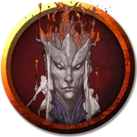

Дроу споровый слуга
Drow Spore Servant
Среднее Растение, без мировоззрения

Класс Доспеха 15 (кольчужная рубаха)
Хиты 13 (3к8)
Скорость 20 футов
| мод | спас | ||
|---|---|---|---|
| СИЛ | 10 | +0 | +0 |
| ЛОВ | 14 | +2 | +2 |
| ТЕЛ | 10 | +0 | +0 |
| мод | спас | ||
|---|---|---|---|
| ИНТ | 2 | −4 | −4 |
| МДР | 6 | −2 | −2 |
| ХАР | 1 | −5 | −5 |
Иммунитет к состояниям паралич, очарование, отравление, ослепление, испуг
Чувства слепое зрение 30 футов (слеп за пределами этого радиуса), пассивное Восприятие 8
Опасность 1/8 (25 опыта)
Бонус мастерства +2
Действия
Короткий меч. Рукопашная атака оружием: +4 к попаданию, досягаемость 5 фт., одна цель. Попадание: Колющий урон 5 (1к6 + 2).